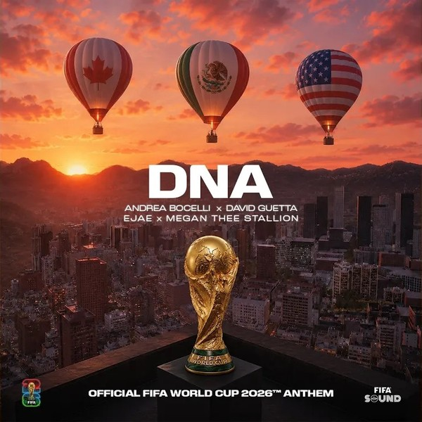
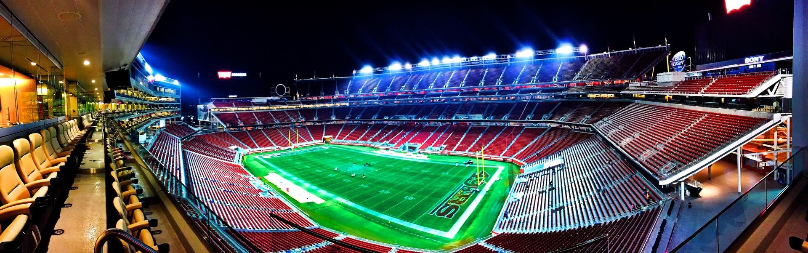
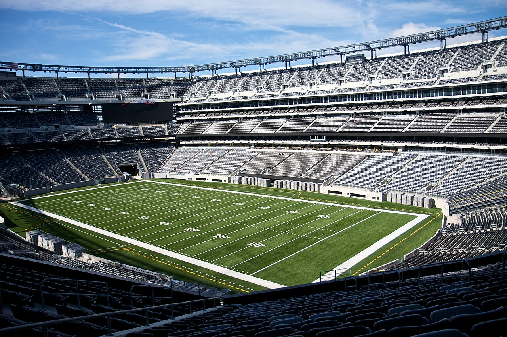

One number still sits on top of the 2026 World Cup: 30.2%. That is the model's estimate, as of 2 July, with the group stage complete and the Round of 32 half-played, of the chance that Argentina lifts the trophy — ahead of Spain at 21.5% and France, the tournament's big riser, at 19.2%, with England next on 8.3%. The ladder drops away fast: the top two hold more than half of all the title probability between them, and only ten of the 48 teams still have even a one-in-a-hundred chance.
It is the broadest World Cup ever — 48 teams, 12 groups, a brand-new Round of 32 — and yet the favourites cluster at the very top. The 30.2% is not a guess about one match; it is the share of 100,000 simulated tournaments, each one playing out every remaining game and the rest of the bracket, that Argentina wins.
We have, in a sense, watched this top two play for the trophy before. On 18 December 2022, in Lusail, the model's current favourite and the market's pick met in the final: Argentina 3–3 France, settled 4–2 on penalties after Emiliano Martínez's save and Gonzalo Montiel's clinching kick. Lionel Messi scored twice, lifted the cup and took a second Golden Ball; Kylian Mbappé scored a hat-trick — the first in a men's World Cup final since 1966 — and won the Golden Boot on eight goals, and still went home a runner-up. FIFA called it the greatest final ever. The split it left behind — Messi with the team's prize, Mbappé with the individual crown — is the same fork the cover asks you to pick.
Four years on, the same two still frame this forecast, but from a shifting distance: the model makes Argentina its favourite at 30.2%, while the betting market backs France and rates Argentina only fourth. France has quietly closed the gap on the model's side too — the last-32 upsets that cleared its path have lifted it to third at 19.2%, its best standing of the tournament. A rematch is just one branch in 100,000 simulated brackets — set the predictor to Argentina v France to see the head-to-head the model gives today. A number that confident invites a simple question: says who? Before you take it on trust, you should be able to run it yourself.
Where it's played
Before the bracket, the geography. The first 48-team World Cup is spread across sixteen stadiums in three countries — the United States, Canada and Mexico — from the opener in Mexico City to the final outside New York.
All 16 host venues across the United States, Canada and Mexico. Final: MetLife (19 Jul); Opener: Estadio Azteca (11 Jun). Marker size scales with the number of matches each stadium hosts; click any marker for its capacity, schedule and a photo. Estadio Azteca becomes the only ground to host three men's World Cups.
How the model thinks
Three words do all the work behind that 30.2%: Elo, Poisson and Monte-Carlo. None of them is a black box, and none needs a statistics degree to follow. Here is the whole machine in three steps.
Elo
A single strength number for each team, learned from a century and a half of real international results — the same idea chess uses. Right now the model rates Argentina top on 2220, then Spain 2198 and France 2154.
Poisson
Turn the Elo gap between two sides into expected goals, then into the odds of a win, draw or loss. Argentina versus France comes out at about 1.6 goals to 1.2 — a 46% / 25% / 29% split, a likely 2–1.
Monte-Carlo
Play the whole tournament out 100,000 times from a fixed random seed, every remaining match and the rest of the bracket, and count the winners. Argentina lifts the trophy in 30.2% of those runs.
Elo learns the strengths, Poisson turns a strength gap into goals, Monte-Carlo replays the tournament a hundred thousand times.
None of these numbers is hand-picked. The Poisson step is calibrated on internationals played since 2002; for the curious, that comes out as a base of 2.74 goals a game, nudged by 0.0052 of a goal for every Elo point between the two teams. The Monte-Carlo step runs from a fixed seed, 20260618, so it returns the same answer every time anyone runs it. That fixed-ness is the whole point: every figure here is one you can reproduce, and the next section hands you the controls to try.
Run it yourself
That is the machine. Here are its controls. The bars below open on the published odds — Argentina 30.2%, Spain 21.5%, and so on down the field — running the very model that produced the headline. Now change something.
Drag a team's strength up or down and re-run the simulation. The odds recompute live, in your browser. Weaken Argentina by a hundred Elo points — roughly the gap between a top side and a merely good one — and Spain takes over as favourite while Argentina slides toward the chasing pack. The 30.2% was never a fact about the future; it was a reading that moves the moment you touch its inputs.
At rest these are the exact published numbers. When you re-run, each bar shows your scenario and its change versus the published value.
So the champion odds bend the moment you touch the model. The single-match odds do too — and so does another verdict the model never sees: the betting market.
Is 30.2% a lot?
A 30.2% favourite sounds commanding until you remember how often the favourite goes home early. So is 30.2% actually a big number? Held up against the long history of World Cup favourites, it turns out to be neither a lock nor a hedge.
The history is genuinely unkind to favourites. By FIFA's own count across the 22 men's World Cups, the pre-tournament favourite has lifted the trophy only about 23% of the time — five tournaments out of twenty-two. Since 1966, when pre-tournament odds were first recorded, the shortest-priced team has gone on to win just three times: West Germany in 1974, Brazil in 1994, Spain in 2010. Backing the favourite has, more often than not, been a way to lose money.
Read against that bar, Argentina's 30.2% sits a clear seven points above the long-run favourite hit-rate. The model is not claiming Argentina is destined to win; it is claiming Argentina is a slightly stronger-than-usual favourite — more likely than any other single team, and a little more likely than the typical favourite, but still odds-against.
The deeper reason the number stays under one-in-three is that winning a World Cup is a closed shop. Only eight nations have ever won one, and just three of them — Brazil, Italy and Germany — account for 13 of the 22 titles (59%). Even home advantage, which sounds decisive, has converted only about 27% of the time: six host winners in twenty-two. In a tournament this concentrated and this upset-prone, a transparent model that puts one team near a third of the title probability is making a strong call, not a safe one.
The ~23% favourite win-rate is FIFA's figure (“What happened to the FIFA World Cup favourites?”), corroborated by European Gaming Industry News; accessed 2 July 2026. The eight-nations, top-three-59% and host-27% figures are computed from the 1930–2022 World Cup record (runnable in Verify). Argentina's 30.2% is the model's own output.
Predict any match
The slider higher up let you move the whole field at once. The same engine works one game at a time, so now point it at a single match. Pick any two of the 48 teams; the model reads the gap in their Elo ratings as expected goals and gives back the chance of a home win, a draw or a loss, live in your browser. Or pull up a real scheduled fixture and see the exact forecast already on the books for it.
Expected goals: 1.6 – 1.2.
The model treats every match as neutral-venue — no home advantage for the hosts. “Any two teams” recomputes live; “scheduled fixture” runs the same neutral-venue Elo→Poisson model on the six Round-of-32 ties still to be played.
Where the model fights the ranking
The model is most interesting where it disagrees, and it disagrees with three different authorities in turn. The first is FIFA. A system trained on results does not buy the official world ranking, and its boldest call is Norway: 31st in the world by FIFA, lifted here to the ninth-best chance of winning the whole thing. Colombia is the headline split — FIFA's 13th, the model's fifth, at 5.5%, ahead of Brazil. The two CONCACAF hosts get the same treatment: Mexico climbs from 14th to tenth, the United States from 17th to twelfth.
The model is just as willing to fade a favourite. Portugal, fifth in the world, sits eighth here, behind a Colombia side ranked eight places below it, and behind Brazil and Morocco too. At the very top the two systems shake hands — Argentina is first on both lists, Spain second, France third, England fourth — but everywhere in the middle they argue. Those arguments are exactly what the slider above lets you settle for yourself.
Money versus merit
The second authority the model overrules is money. The transfer market and the model value teams differently, and the cleanest example is Colombia again. France fields the most expensive squad in the tournament, €1.52bn of talent, and — with the last-32 upsets clearing its half of the draw — the model now gives it a 64% chance of reaching the semi-finals: about €24m of squad value for each percentage point. Colombia's squad costs €302m, a fifth of France's, yet still earns a 24% semi-final chance: just €12m per point, nearly twice as efficient.
At the extremes the gap is starker. Argentina turns the tournament's seventh-priciest squad into a 68% semi-final chance — about €12m per point, the best value of any contender. And the cautionary tale is now written in full: Germany, a €947m project, is already out, beaten on penalties by Paraguay in the Round of 32 — a billion-euro squad that bought a 0% semi-final chance. Portugal, another billion-euro side still in, pays about €62m for each point of its slim 16% semi-final chance. The market pays for names. The model counts results, and the two bills rarely match.
The model's favourite is the market's fourth choice
FIFA ranks the teams; the transfer market prices them; and the bookmakers, who do both with real money on the line, land somewhere else again. This is the third place the model picks a fight, and the sharpest. The team it likes best, the bookmakers rate only fourth.
They are reading the same tournament and reaching a different verdict. The table sets the model's champion probability against DraftKings' outright odds, shown as the American price, the decimal price, the raw probability those odds imply, and that probability once the bookmaker's built-in margin is stripped out. The rows where the two rankings split are where to look.
| Team | Model % | Model rank | Market (US) | Market (dec) | Implied % | De-vigged % | Market rank |
|---|
Why believe it
If the model argues with FIFA, with the transfer market and with the bookmakers, why trust it at all? Here is the honest answer. Tested on 8,000 historical internationals it had never seen, the model clearly beats a naive baseline that just predicts the average home/draw/away rates: its log-loss is 0.899 against the baseline's 1.062 — about 15% less error — and it calls 58.9% of results correctly versus 48.3%. Fit only on data from before the tournament, it never trained on a single game it is now forecasting.
On the 72 group games of this World Cup, now all played, the model beats the same baseline on every measure: log-loss 0.915 against 1.074, accuracy 61.1% against 47.2%. Seventy-two games is still a modest, upset-prone sample, so this is supporting evidence, not the verdict — the 8,000-match check is the reliable read. The long-run skill is real, and the group stage has, if anything, broken the model's way.

Every group pick, scored against what actually happened
Trust is cheap to claim and easy to check, so here is the full ledger. Before a ball was kicked, the model published a favourite and a likely score for every group game. All seventy-two have now been played, so each one can be marked right or wrong. The whole record is laid out below — the model's call, the real result, and a tick or a cross — and you can sort it by clicking any column header.
Counting them up, across the seventy-two group games the model called 44 of 72 outcomes correctly — a little over three in five. The honest way to ask whether that is any good is to line it up against the dumbest possible forecaster.
| Test | Forecaster | Accuracy | Brier | Log‑loss |
|---|
On these 72 games the model beats the naive base-rate on all three measures at once: 61.1% accuracy against 47.2%, a lower Brier score (0.544 vs 0.649) and a lower log-loss (0.915 vs 1.074). It is a healthy lead, but still a modest, upset-prone sample, so it is not by itself proof of much. The trustworthy read is the skill check on 8,000 historical internationals it never trained on, where the model beats the same baseline by a similar margin: 58.9% accuracy against 48.3%, and clearly lower Brier and log-loss. Three weeks of football can flatter or flatten any model; what it cannot do is fluke a ten-point accuracy edge over 8,000 matches.
Predictions are the pre-tournament Elo→Poisson model — fit only on data from before the World Cup (the 11 June kickoff), so it never trained on a game it is scored against. Real scores via ESPN. Group stage only.
Messi led the group-stage golden boot, and the goals arrived late
Through the group stage, on the 139 goals scored by the 23 June snapshot, the scoring chart was led — fittingly — by Lionel Messi. He was out in front on five: a hat-trick against Algeria and a brace against Austria, every one of them from open play. Erling Haaland and Kylian Mbappé sat a goal back on four apiece, with Canada's Jonathan David and Germany's Deniz Undav — whose team has since gone out in the Round of 32 — on three. None of the front-runners had scored from the penalty spot.
 Watch · YouTubeMessi's hat-trick — Argentina 3–0 Algeria, 2026 World Cup highlights
Watch · YouTubeMessi's hat-trick — Argentina 3–0 Algeria, 2026 World Cup highlights
Highlights via FIFA / YouTube — opens the official video in a new tab (demo embed; click-through facade, not an autoplay clip).
Across those 139 goals the busiest single window is the closing minutes before half-time, but the more striking pattern is at the other end of the clock: better than one in four goals — 25.9% — has arrived from the 76th minute on, and roughly one in nine has landed in stoppage time. Messi's own fifth goal, in the 95th minute against Austria, fits the trend exactly.
This tournament has leaned heavily on open play: 89% of goals have come from the run of play, against just 4% from penalties — a touch below the long-run international rate of about 7%. Own goals have been unusually common at 6.5% of all goals, roughly three times their historical share, though with only 139 goals on the board so far that gap may yet narrow.
2026 goal data from openfootball (CC0), as of 23 June 2026; the long-run base rate is computed from the shared goalscorers.csv (47,676 recorded international goals). Both are reproducible in Verify. Highlight video via FIFA / YouTube, demo embed only.
The stars, by EA Sports FC
A World Cup is sold on its stars, so it is worth asking whether star power is the same thing as a team built to go far. EA Sports FC rates every player in the tournament on a 0–99 scale; the model rates every team on its odds of a deep run. Set one against the other and you can see where the two stories agree and where the brightest names are stranded on teams the model does not fancy.
The cards below carry EA’s own published ratings — the overall and all six attributes — cited to EA Sports FC, not computed here. Each opens to its EA source; tap one to see the player’s radar next to the model’s odds for the side they play on.
Ratings are EA Sports FC (FC 26 base cards; Toni Kroos FC 24), attributed to EA Sports and sourced via public EA FC rating databases. Portraits in this build are official player photos, shown for the local build only and swapped to Wikimedia photos before any public release. SF odds on each card are this project’s own Elo→Poisson→Monte-Carlo model.
PAC Pace · SHO Shooting · PAS Passing · DRI Dribbling · DEF Defending · PHY Physical
Plot every player’s EA overall against the model’s odds that their team reaches the semi-finals, and the link is loose. A high EA rating travels with a deep-running team only some of the time: Argentina and Spain stack strong cards on high-odds sides, but some of the best-rated individuals here — Erling Haaland, one of EA’s top-rated at 90, on a Norway side the model gives a modest ceiling — sit far from the deep-run favourites. Individual brilliance and a team built to go deep are related, not the same thing.
Player ratings are EA Sports FC — overall plus the six face attributes (PAC/SHO/PAS/DRI/DEF/PHY) are EA’s own published values (FC 26 base cards; Toni Kroos on his FC 24 card). Ratings © EA Sports; sourced via public EA FC rating databases (per-card source links in each card’s “Sources”). Not affiliated with or endorsed by EA Sports or FIFA.
Publish gate — portraits. This local build shows official player portraits (copyrighted). They are used for the local build only and must be swapped to the Wikimedia Commons photos below before any public release (the same posture as the self-hosted anthem). The publishable Wikimedia photos and their required attributions are:
Team deep-run (semi-final) and champion odds shown on each card come from this project’s own Elo→Poisson→Monte-Carlo model. The EA ratings are reproduced here for commentary and comparison; they are not a product of this project.
The one knockout the model won't predict
Every probability on this page comes from simulating matches — but the simulation stops at the final whistle. When a knockout tie is level after 90 minutes, the model does not play out extra time and penalties kick by kick; it splits the tie with a single win-probability number and moves on. That is a deliberate shortcut, and the data says it is a forgivable one, because the thing being skipped is very close to a coin toss.
We checked it against 678 real international penalty shootouts going back to 1967. The higher-rated team — the “favourite” by the same Elo used everywhere else on this page — won just 53.7% of them. These were not toss-ups on paper: the favourites carried an average Elo edge of 114 points, the kind of gap worth about a 66% win rate in normal play. Once the match reached penalties, almost all of that edge vanished. Even among the most lopsided ties — favourites who would win roughly three games in four in regulation — the shootout win rate barely moved off 50%.
The team that takes the first kick wins 53.1% of the time overall — and at the World Cup finals specifically, the first shooter has won just 17 of 35 (48.6%), slightly less than half. So the model's analytic shortcut is not hiding a systematic bias; it is declining to forecast something that is, by the historical record, mostly luck. When two contenders meet in a simulated round and the odds read close to even, remember that if it goes the distance the real thing would be close to even too — Argentina lifted the 2022 trophy on penalties after France shot first, exactly the kind of near-coin-flip this is about.
Favourite-win rate is barely above chance — a two-sided binomial test gives p ≈ 0.06, so read it as “mostly luck,” not a proven 50/50. Computed from 678 shootouts (1967–2026) using the same leak-free Elo as the forecast; reproducible in Verify.
With the bracket set and the giants falling, only the trophy is left to argue
The group stage is over — all 72 games played — and the Round of 32 has already delivered its shocks. Ten of the sixteen last-32 ties are done, and two of them buried pre-tournament heavyweights: Germany went out on penalties to Paraguay, and the Netherlands went the same way against Morocco. Both were among the model's top ten before a ball was kicked; both now sit on a 0% title chance. The knife edge is no longer about who qualifies — that question is settled — but about who survives the ties still to come, and two of them still give the underdog a real chance.
With the group tables final, the bracket is no longer a distribution — it is a fixture list. Argentina, through as winners of Group J, meet Cape Verde in the Round of 32; the model gives that tie to Argentina in more than nine runs out of ten. The path beyond it is where the real uncertainty now lives, and the penalty upsets above have already redrawn it.

What is not settled is the prize itself. Step back and the broadest World Cup ever still funnels to a familiar few: European and South American teams hold 95.1% of all the title probability between them, the other four confederations split the remaining 4.9%, and every side in the model's top six — Argentina, Spain, France, England, Colombia and Brazil — comes from those same two continents. So the open question is no longer who survives the group stage. It is whether a model can be right about the trophy when the bookmakers, the rankings and a century of fallen favourites all lean the other way. That argument runs on the numbers on this page — and you can now run it yourself.
Methods & sources
Every number above is the output of a transparent Elo → Poisson → Monte-Carlo model, re-run for this article and reproducing the published forecast exactly (deterministic at seed 20260618, 100,000 simulations). The model code is in code/simulate.py; the live in-browser version that powers the explorable is code/client_model.js; the derived journalism figures are in code/story_findings.py.
- Match spine & results: openfootball/worldcup.json (public domain, CC0).
- Team strength (Elo, ~49k internationals since 1872): martj42/international_results.
- Knockout bracket & the 495-row best-third allocation: 2026 WC knockout stage + FIFA Regulations Annex C.
- Official ranking: FIFA Men's World Ranking (11 June 2026 release).
- Squad market values: Transfermarkt via PlanetFootball (as of 14 June 2026).
- Historical context: Fjelstul World Cup Database (CC BY-SA 4.0) + Wikipedia.
- Images: national flags and the FIFA World Cup Trophy and venue photos from Wikimedia Commons (licences credited in each caption). The hero is an AI-generated composite depicting likenesses of Lionel Messi and Kylian Mbappé (see Verify); the soundtrack is the self-hosted official 2026 anthem track.
- Official anthem “DNA”: inline Spotify embed — not re-hosted; the platform player carries its own rights.
- Built with Vega-Lite, D3 and Leaflet.
- Needs a connection: the interactive charts (Vega-Lite), the venue map (Leaflet) and the in-browser “Run” reproduction in the Verify panel (Pyodide) load their libraries from public CDNs, so they need an internet connection. The article text, the headline numbers and the live champion-odds explorable all work offline.
Caveats carried by the model: group ties broken by points → goal difference → goals for → a random draw (no full head-to-head); extra-time/penalties approximated by an Elo win-expectation term; all matches treated as neutral-venue (no host advantage); goals are independent Poisson draws; Monte-Carlo sampling noise is about ±0.3 percentage points on champion odds.